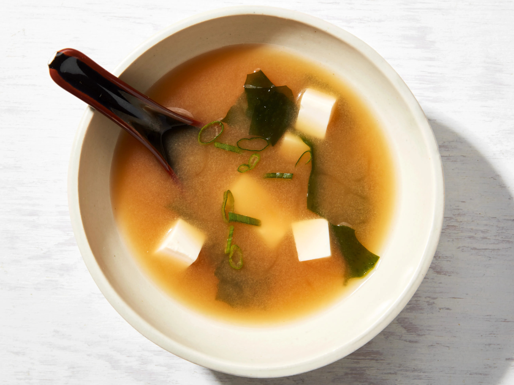

Miso Soup

Description
This traditional Japanese soup will not only fill you up,
it will bring you back to your childhood
Ingredients
- 4 cups water
- 2 teaspoons dashi granules
- 3 tablespoons miso paste
- 1 (8 ounce) package silken tofu, diced
- 2 green onions, sliced diagonally into 1/2 inches pieces
Steps
- Combine water and dashi granules in a mdeium saucepan over medium to
high heat; bring to boil. Reduce heat to medium and whisk in miso paste.
Stir in tofu. Seperate the layers of green onions, and add them to the soup.
Simmer gently for 2 to 3 minutes before serving.
Return to homepage